1. 브랜드명 후보 NAMING
심볼은 이름과 상관없이 하나로 쓰고, 워드마크만 후보별로 만들었어요. 회의에서 이름을 정하면 그 세트를 앱에 적용해요.
여행노트 · TRAVEL NOTE
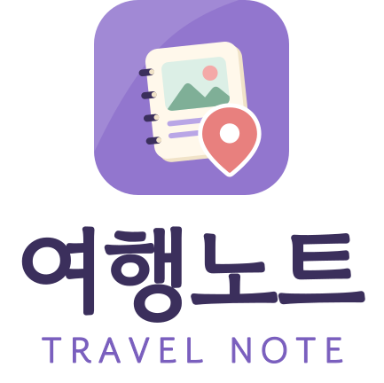
바로 이해되는 이름. 계획·기록·꾸미기를 "노트 한 권"으로 묶어요. 일반 명사라 상표·검색에서 구분이 약할 수 있어요.
모아로그 · MOALOG
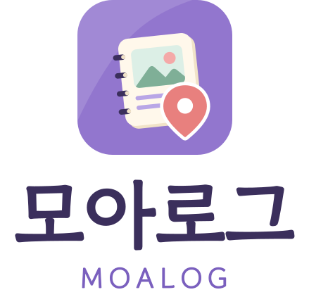
"모으다 + Log". 여행 밖(모임·기념일·일상)으로 넓히기 좋고 독창적이에요. 처음엔 여행 앱인지 바로 드러나지 않아요.
모먼트립 · MOMENTRIP
"Moment + Trip". 순간을 간직한다는 감성이 강해요. 뜻을 한 번 설명해야 할 수 있고, 여행에 조금 더 묶여요.
2. 심볼 SYMBOL
스크랩북형(제안서 A안): 스프링 노트 위 사진 한 장 + 모서리의 지도 핀. 요소는 세 가지로 제한해 작게 봐도 실루엣이 남아요.
앱 아이콘 (밝은 배경)
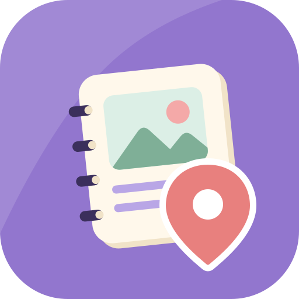
노트 = 기록·꾸미기, 사진 = 추억, 핀 = 장소·계획
앱 아이콘 (어두운 배경)
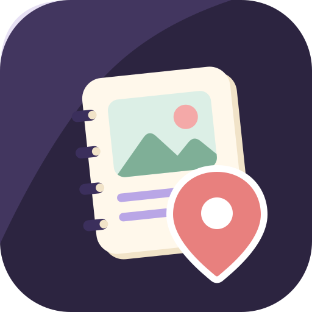
다크 모드·어두운 홈 화면용
심볼만 (배경 없음)
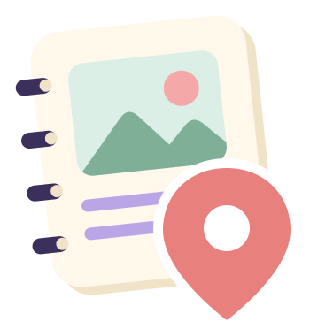
문서·인쇄·스티커용. 한 가지 색 버전도 있어요
한 색 (밝은 바탕)
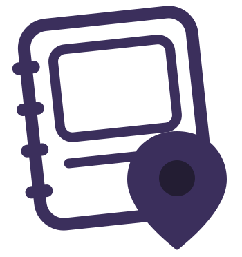
도장·각인·흑백 인쇄
한 색 (어두운 바탕)
사진 위·어두운 배경
파비콘 (작은 크기 전용)
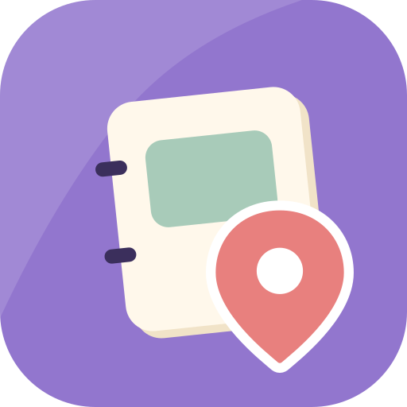
32px 이하에서는 사진·줄을 빼고 면으로 단순화
3. 작은 크기 식별성 SCALE TEST
검토 기준 2 — 24px·16px 에서도 노트와 핀이 구분되는지 확인하세요.
홈 화면 (밝은 배경화면)
홈 화면 (어두운 배경화면)
4. 워드마크 · 조합형 로고 LOGOTYPE
글꼴: 고운돋움(Gowun Dodum, SIL OFL) 을 살짝 굵게 다듬어 윤곽선으로 바꿨어요 — 글꼴이 없는 곳에서도 똑같이 보여요. 마지막 글자 밑 코랄 띠는 마스킹테이프를 뜻해요.
가로형 · 밝은 배경
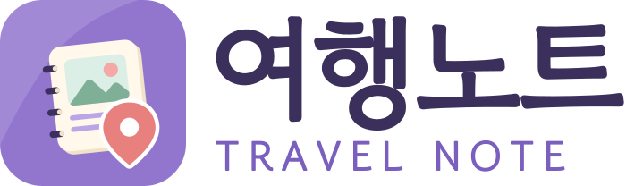
가로형 · 어두운 배경
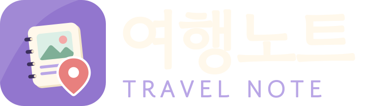
한글 워드마크
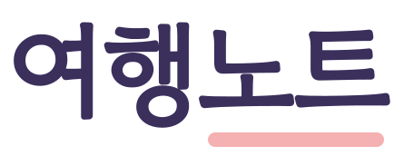
영문 워드마크
모아로그 가로형
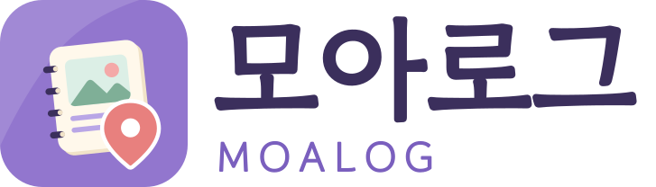
모먼트립 가로형
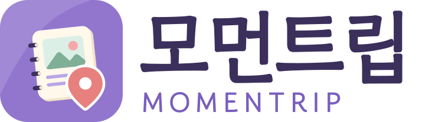
여백 · 최소 크기
로고 둘레에는 심볼 높이의 ¼ 이상 빈 공간을 둬요. 가로형은 높이 24px, 심볼은 16px(파비콘 버전) 보다 작게 쓰지 않아요. 앱 화면 위쪽에는 가로형을 높이 28~32px 로 써요.
5. 색 COLOR
기존 보라 UI를 유지하면서 스크랩북의 종이 감성을 더해요. 파스텔은 면·장식에만, 글자는 짙은 색으로 써요.
| 글자 / 배경 | 미리보기 | 명도 대비 | 쓰임 |
|---|---|---|---|
| 플럼 / 크림 | 여행노트 | 11.38 : 1 | 본문 OK |
| 딥 라벤더 / 흰색 | 여행노트 | 4.99 : 1 | 작은 글자 OK (AA) |
| 흰색 / 라벤더 | 여행노트 | 3.68 : 1 | 18px 이상 굵은 글자·버튼만 |
| 크림 / 나이트 | 여행노트 | 15.35 : 1 | 다크 모드 본문 |
| 플럼 / 코랄 | 여행노트 | 6.35 : 1 | 스티커 위 글자 |
| 플럼 / 세이지 | 여행노트 | 6.82 : 1 | 카테고리 칩 |
6. 글꼴 TYPOGRAPHY
로고 · 큰 제목
함께 떠나고, 기록하고
고운돋움 (SIL OFL) — 부드러운 라운드
손글씨 · 스크랩북
우리의 하루를 한 장씩
나눔손글씨 갈맷글 (앱에 이미 들어 있음) — 스티커·메모·일기
본문 · UI
일정 3개 · 예산 24,400원 · 오후 2:30
시스템 고딕 (Pretendard / Apple SD 산돌고딕 Neo / 맑은 고딕) — 숫자·작은 글자 가독성
7. 이렇게는 쓰지 않아요 DON'T
늘리거나 눌러서 비율을 바꾸기
브랜드 색이 아닌 색으로 바꾸기
파스텔 배경 위에 밝은 글자 로고 (대비 부족)
8. 파일 FILES
모두 brand/ 폴더에 있어요. SVG 는 편집 가능한 벡터 원본이에요 (생성 스크립트로 다시 만들 수 있음).
symbol/app-icon.svg·-dark·-maskablesymbol/mark.svg·mark-mono-plum·mark-mono-whitesymbol/favicon.svgwordmark/{이름}-ko(-dark).svg·-en(-dark).svglockup/{이름}-horizontal(-dark).svg·-stacked(-dark).svgpng/icon-512.png·icon-192.png·icon-maskable-512.png(PWA)png/apple-touch-icon.png(180px, iOS 홈 화면)png/favicon.ico(16·32·48) ·favicon-16/32/48.png- 이름:
yeohaengnote=여행노트 ·moalog=모아로그 ·momentrip=모먼트립
남은 확인
상표·도메인·앱스토어 이름 중복은 최종 확정 전에 따로 확인해야 해요. 이 시안은 디자이너 회의용 1차안이며, 디자이너가 다듬을 때 SVG 를 그대로 열어 고칠 수 있어요.